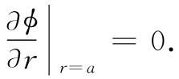
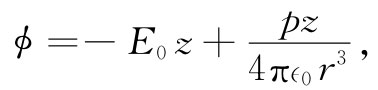

现在让我们考虑一个并非十分完美的例子，因为我们将要用的方程式不会真正十分普遍地代表该主题，而只是代表一种人为的理想情况。将要讨论的是水流 问题。对于绷紧的薄膜，我们的方程乃是一种近似，只有在挠曲程度微小 时才正确。在有关水流的讨论中，将不做这种近似，而必须做出一些与实际的水流有很大出入的限制条件。我们将仅仅处理一种不可压缩的 、无黏滞性的 、而又无环流的 液体的定常流动情况。然后，就将速度v（r）作为位置r的函数来表达该流动。若流动是定常的（唯一具有静电学类似的一种情况），则v与时间无关。如果用ρ代表该流体密度，则ρv便是单位时间通过单位面积的质量。根据物质守恒，ρv的散度一般将是单位体积内材料质量的时间变化率。我们将假定，并没有任何不断创造或消灭物质的过程。于是物质守恒就要求▽·ρv=0（一般说来，它应当等于-∂ρ/∂t，但由于我们的流体是不可压缩的，ρ便不可能发生变化）。由于ρ处处相同，故可将其分离出来，因而上述方程就不过是
▽·v=0.
好！我们又回到静电学（空间不存在任何电荷）上来了。上式恰好就像▽·E=0。然而，情况并非那样简单！静电学并不 仅仅是▽·E=0，而是包括一对 方程。单单一个方程不能告诉我们足够多的东西，还需要另一个方程。为了同静电学协调起来，我们还需要v的旋度 为零。但这对于实际液体来说，并非普遍正确。大多数液体往往会产生一些环流。所以我们就被限制在没有液体环流的情况。这样的流动常称为无旋流动 。不管怎样，若我们作出了所有这些假定，便可以想象 出类似于静电学的一种流体流动情况。因而采取
▽·v=0 （12.28）
和
▽×v=0. （12.29）
我们要强调，遵循这些方程的液体流动只是一些特殊而远非普遍的情况。它们是表面张力、可压缩性和黏滞性都必须可以忽略、而又可以假定该流动是无旋的那么一些情况。这一些条件对于真实水的适用性竟是如此之少，以致数学家冯·诺伊曼曾经说过，凡对式（12.28）和（12.29）进行过分析的人们乃是在研究“干水”！我们将在第40和41章中对流体流动的问题进行更详细的讨论。
由于▽×v=0，因此“干水”的速度就可以写成某个势的梯度：
v=-▽ψ. （12.30）
ψ这个量的物理意义是什么？它并不含有任何十分有用的意义。速度可以写成为势的梯度，仅仅是因为该流动是无旋的。而根据与静电学的类比，ψ就称为速度势 ，但它与ϕ不同，与势能毫无关系。由于v的散度为零，我们便有
▽·（▽ψ）=▽2 ψ=0. （12.31）
和在自由空间（ρ=0）里的静电势一样，这速度势ψ也服从同样的微分方程。
让我们举一个属于无旋流动问题的例子，并看看能否通过学过的方法来解决它。考虑穿过液体下落的球体问题。如果它降落得太慢，则我们所忽略的黏滞力就会十分重要。如果它落得太快，则会有一些小漩涡（湍流）出现在其尾部，而在水里就会有一些环流。但若该球体运动得既不太慢又不太快，则水流将大体上符合我们的那些假设，这样才能通过那些简单方程式来描述水的运动。
在固定于球体 的参照系中来描述所发生的事情很方便。在这个参照系中，我们提出这样一个问题：若在离球很远的地方水均匀流动，当其流经静止球体时，运动情况将如何呢？这就是说，在离球很远的地方，流动处处相同。但在球体附近的流动则如图12-8中的那些流线。这些线，始终平行于v，而与电场线相对应。我们希望得到有关这一速度场的定量描述，即关于任一点P的速度表示式。
图12-8 从球旁流过的无旋流体的速度场
可以从ψ的梯度求得速度，因而首先就要算出势来。我们需要处处都满足式（12.31）的那一种势，而这个势也应满足两个限制条件：（1）球内区域不存在流动；（2）在远距离处流动是稳定的。为了满足条件（1），垂直于球面的v分量就应等于零。这意味着，在r=a处，∂ψ/∂r为零。为了满足条件（2），则在r≫a的所有点上，必须有∂ψ/∂z=v0 。严格说来，并没有一种静电情况会完全对应于我们的问题。实际上它对应于把一个介电常量为零 的球体放置在一个均匀电场中。要是已求出了关于介电常量为κ的球体放在一均匀场中的问题之解，那么代入κ=0，我们便该立即获得有关这一问题的解答。
实际上，并未详细算过这个特定的静电学问题，那现在就让我们来做吧（本来也可以直接用v和ψ来解决流体问题的，但仍将采用E和ϕ，因为那是我们所熟悉的）。
问题是：求出▽2 ϕ=0的一个解，使得对于r很大时E=-▽ϕ为一常数，比方说E0 ，而又使得在r=a处E的径向分量为零，即
 （12.32）
我们的问题牵涉到一种新的边界条件，这里并不要求表面上的ϕ为常数，而是要求∂ϕ/∂r为常数。这样一来，情况就有所不同了，不容易立即得到答案。首先，当该球体不存在时，ϕ应当是-E0 z。于是E应该沿z轴方向，并具有一个大小不变的E0 。原来我们曾经分析过内部具有均匀极化的一个电介质球的情况，而且我们发现在这种均匀极化球内部的场乃是一个均匀场，而在其外部的场则与一处在球心的点偶极子的场相同。因此，我们猜测所希望得到的解为一个均匀场和一个偶极子场的叠加。因偶极子之势（第6章）为pz/（4π∈0 r3 ），于是我们假定
 （12.33）
由于偶极子场按1/r3 下降，所以在大的距离处我们便恰好拥有场E0 。我们的猜测自动满足了上面的条件（2）。但该偶极子强度p取何值呢？为求得这个值，我们可利用关于ϕ的另一条件，即式（12.32）。必须取ϕ对r的微商，但这当然要求在一个固定的角度上进行，因而为了方便，首先就得用r和θ而不是用z和r来表达ϕ。由于z=rcosθ，所以得：
上式在r=a处对于所有的θ均必须为零。若取p为
p=-2π∈0 a3 E0 ， （12.36）
那就确实如此。
要小心注意！如果式（12.35）中两项并非都具有相同的θ依赖关系，则不会有可能选得出p而使式（12.35）在r=a处对一切角度都变为零。我们算出的结果意味着，在写出式（12.33）时的猜测是聪明的。当然，在做出该猜测时，我们是向前看的。我们知道将需要另一项，它将会：（a）满足▽2 ϕ=0（任何真实的场都该如此）；（b）依赖于cosθ；（c）并在大的r处降至零。偶极子场就是唯一能满足这三个条件的场。
利用式（12.36），我们的势就是
关于流体流动问题的解可以简单地写成：
从这个势求v很方便，对此事我们就不进一步追究下去了。